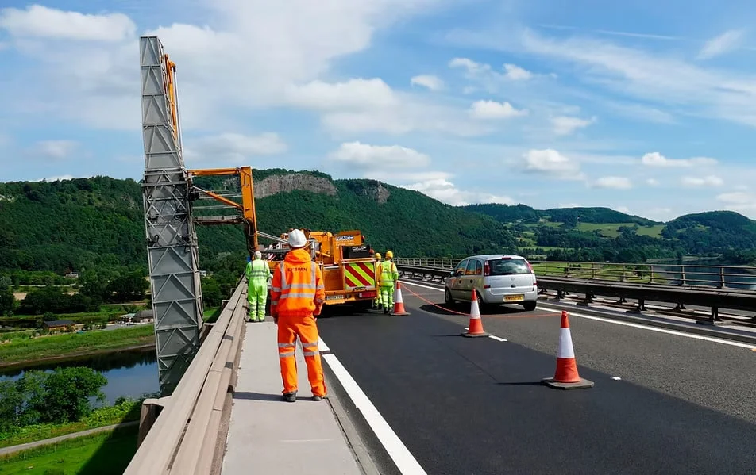

Inspect & understand
Surveys of bearings, expansion joints and waterproofing to understand the structure and its constraints.
EKSPAN / EARLY CONTRACTOR INVOLVEMENT
Bring engineering, manufacturing and site knowledge into the project while the approach is taking shape.

HOW WE SUPPORT YOUR PROJECT
Surveys of bearings, expansion joints and waterproofing to understand the structure and its constraints.
Engineering reports, temporary works design and practical buildability input.
Cost analysis and programme support alongside the project team.
INSPECTIONS & ECI
Bring surveys, design input and delivery planning into one conversation.
Discuss early involvement ↗
THE CAPABILITY / IN PRACTICE
Investigations and temporary works informed the replacement approach.
Explore the project ↗Explore the Inspections & ECI brochure.
Download the brochure (PDF, 8.5 MB) ↓